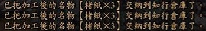

※本頁各設施收穫/改良的資料，感謝GF3霸王傳 淺井家「鋼之介」的整理提供，大感謝～^^*
☆工房加工產物一覽
產物為加工完後自動放入知行倉庫裡
工房 Lv1 產物
產品 |
材料 |
功用 |
木碗 4 |
樺木樹枝 8 、雜穀稻草 4 |
再加工 |
筷子 6 |
樺木樹枝 4 、楮樹 4 |
再加工 |
味噌 3 |
大豆 6 、木碗 3 、差鹽 3 |
再加工 |
釣鉤 3 |
赤目鐵砂 3 、苧麻 3 |
再加工 |
沙丁魚油5 |
沙丁魚 6 |
再加工 2006.03.29改版新增 |
草繩 3 |
樺木樹皮 3 、雜穀稻草 9 |
改良 Lv2 → Lv3 ：林地 |
桶 2 |
樺木樹枝 4 、樺木樹皮 4 |
再加工、改良 Lv2 → Lv3 ：水田、牧場、礦山、漁場 |
曬竿 3 |
煤竹 6 、煤竹皮 6 |
改良 Lv2 → Lv3 ：水田、田 |
釣竿 2 |
煤竹 2 、釣鉤 2 、苧麻 2 |
改良 Lv2 → Lv3 ：漁場 |
鐮刀 2 |
赤目鐵砂 4 、樺木樹枝 2 |
改良 Lv2 → Lv3 ：水田、改良 Lv3 → Lv4 ：農田 |
鋸子 3 |
赤目鐵砂 6 、樺木樹枝 6 |
再加工、改良 Lv2 → Lv3 ：林地 |
鑿子 2 |
赤目鐵砂 4 、煤竹 2 |
再加工、改良 Lv2 → Lv3 ：礦山 |
鎚子 3 |
赤目鐵砂 6 、樺木樹枝 6 |
改良 Lv2 → Lv3 ：礦山 |
鐵鍋 2 |
赤目鐵砂 8 、雜穀稻草 4 |
改良 Lv2 → Lv3 ：工房 |
雕刻刀 3 |
赤目鐵砂 6 、煤竹 6 |
改良 Lv3 → Lv4 ：工房 |
裁縫針 4 |
赤目鐵砂 4 、苧麻 8 |
再加工、改良 Lv2 → Lv3 ：工房 |
草編魚簍 3 |
樺木樹皮 3 、雜穀稻草 9 |
改良 Lv2 → Lv3 ：漁場 |
灶 1 |
頁岩原土 2 、岩石塊 2 、樺木樹枝 2 |
再加工、改良 Lv3 → Lv4 ：工房 |
屋頂瓦 3 |
頁岩原土 9 、雜穀稻草 6 |
改良 Lv1 → Lv2 ：櫓 |
開墾鐵鍬 2 |
赤目鐵砂 6 、樺木樹枝 4 |
再加工、改良 Lv2 → Lv3 ：水田、農田、村 |
茅屋 1 |
樺木樹枝 5 、雜穀稻草 6 、鐮刀 2 |
改良 Lv3 → Lv4 ：村 |
鳥籠 1 |
樺木樹枝 6 、雜穀稻草 5 |
改良 Lv2 → Lv3 ：牧場 |
火爐 1 |
頁岩原土 5 、雜穀稻草 3 |
改良 Lv2 → Lv3 ：礦山 |
鹽田 1 |
樺木樹枝 3 、桶 3 、開墾鋤 2 |
改良 Lv4 → Lv5 ：漁場 |
麵疙瘩 2 |
稗子 2 、木碗 2 |
改良 Lv2 → Lv3 ：村 |
荷包蛋 2 |
雞蛋 2 、差鹽 4 |
改良 Lv1 → Lv2 ：櫓 |
烤雞 2 |
雞肉 2 、差鹽 4 |
改良 Lv2 → Lv3 ：市 |
毛豆 2 |
大豆 4 、差鹽 4 |
改良 Lv4 → Lv5 ：林地 |
鹹煮蜆貝 2 |
蜆貝 4 、魚醬 8 |
改良 Lv2 → Lv3 ：市 |
煮羊棲菜 2 |
羊棲菜 4 、魚醬 8 |
改良 Lv3 → Lv4 ：村 |
工房 Lv2 產物
產品 |
材料 |
功用 |
便當盒 3 |
櫻樹枝 6 、櫻樹皮 3 |
|
土錘 4 |
頁岩原土 4 、苧麻 2 |
再加工 |
圓木頭 3 |
櫻樹枝 3 、青砥石 3 |
|
投網 2 |
苧麻 8 、土錘 4 、裁縫針 2 |
改良 Lv3 → Lv4 ：漁場 |
手網 3 |
雜穀稻草 6 、樺木樹皮 3 |
改良 Lv3 → Lv4 ：林地 |
蓆子 3 |
燈心草 6 、裁縫針 3 、苧麻 6 |
再加工、改良 Lv2 → Lv3 ：林地、改良 Lv3 → Lv4 ：村、改良 Lv4 → Lv5 ：林地 |
驅邪棒 3 |
樟枝 9 、楮樹 6 |
|
稻草拖鞋 3 |
雜穀梗 9 、樺木樹皮 6 |
改良 Lv3 → Lv4 ：牧場 |
劈刀 2 |
赤目鐵砂 6 、櫻樹枝 2 |
改良 Lv3 → Lv4 ：林地 |
耙子 2 |
赤目鐵砂 6 、櫻樹枝 4 |
改良 Lv4 → Lv5 ：漁場 |
石臼 2 |
岩石塊 4 、櫻樹枝 2 |
改良 Lv4 → Lv5 ：工房 |
馬醉木殺蟲劑 4 |
馬醉木 8 、木碗 4 |
改良 Lv3 → Lv4 ：水田、農田、林地 |
驅鳥彈 3 |
苧麻 6 、樺木樹皮 6 |
改良 Lv3 → Lv4 ：水田、改良 Lv4 → Lv5 ：農田 |
捕蟲網 2 |
苧麻 4 、煤竹 4 、裁縫針 2 |
再加工、改良 Lv4 → Lv5 ：林地 |
壺 2 |
頁岩原土 6 、雜穀稻草 2 |
再加工、改良 Lv4 → Lv5 ：工房 |
手划船 1 |
樺木樹枝 5 、樺木樹皮 2 |
改良 Lv3 → Lv4 ：漁場 |
洋盃 3 |
硅石塊 6 、貝灰 6 |
改良 Lv2 → Lv3 ：市 |
貯水池 1 |
開墾鐵鍬 2 、桶 3 |
改良 Lv3 → Lv4 ：水田 |
燒炭屋 1 |
櫻樹枝 6 、灶 2 |
改良 Lv3 → Lv4 ：林地、改良 Lv4 → Lv5 ：工房 |
蟲小屋 1 |
櫻樹枝 6 、捕蟲網 3 、鋸屑 2 |
改良 Lv4 → Lv5 ：林地 |
辣炒牛蒡 2 |
牛蒡 4 、魚醬 4 |
|
竹簍蕎麥麵 2 |
蕎麥的果實 6 、魚醬 4 |
改良 Lv2 → Lv3 ：市 |
納豆 2 |
大豆 6 、雜穀稻草 4 |
改良 Lv1 → Lv2 ：櫓 |
鹽辛花枝 2 |
墨魚 2 、差鹽 8 |
|
「魚參」魚魚片 2 |
鯖魚 2 、差鹽 4 |
|
裙帶菜味噌湯 2 |
裙帶菜 6 、味噌 2 、木碗 2 |
改良 Lv3 → Lv4 ：村 |
工房 Lv3 產物
產品 |
材料 |
功用 |
三方 2 |
杉木樹枝 4 、楮樹 4 |
再加工 |
醬油 6 |
大豆 9 、壺 3 、差鹽 6 |
再加工 |
土瓶 2 |
頁岩原土 4 、生漆 2 |
|
臼 2 |
櫻樹枝 6 、櫻樹皮 4 |
改良 Lv4 → Lv5 ：水田 |
杵 2 |
杉木樹枝 8 、櫻樹皮 4 |
改良 Lv4 → Lv5 ：水田 |
上等木炭 6 |
杉木樹枝 7 、胚芽米稻草 5 |
再加工、改良 Lv3 → Lv4 ：礦山 |
樽 2 |
杉木樹枝 4 、櫻樹皮 4 |
改良 Lv4 → Lv5 ：礦山 |
馬鞍 2 |
杉木樹枝 4 、老鼠毛皮 6 |
|
刨子 2 |
真砂鐵砂 6 、赤目鐵砂 6 、杉木樹枝 4 |
再加工 |
馬蹄鐵 3 |
真砂鐵砂 3 、赤目鐵砂 6 |
再加工、改良 Lv3 → Lv4 ：牧場 |
割草器 3 |
真砂鐵砂 3 、赤目鐵砂 3 、杉木樹枝 3 |
|
吹管 3 |
赤目鐵砂 6 、胚芽米稻草 6 |
再加工、改良 Lv4 → Lv5 ：礦山 |
提燈 3 |
野漆樹的果實 6 、 油菜子 6 、 雁皮 6 、 杉木樹枝 9 |
改良 Lv3 → Lv4 ：礦山 |
陶爐 2 |
頁岩原土 4 、硅石塊 2 |
|
章魚壺 3 |
頁岩原土 9 、硅石塊 3 |
改良 Lv3 → Lv4 ：漁場 |
玻璃 3 |
硅石塊 6 、吹管 3 |
|
木柵 1 |
杉木樹枝 4 、櫻樹皮 2 |
|
中型火爐 1 |
實土原土 11 、 赤目鐵砂 8 、 上等木炭 3 |
改良 Lv4 → Lv5 ：礦山 |
水槽 1 |
杉木樹枝 4 、壺 2 |
|
馬廄 1 |
杉木樹枝 8 、馬蹄鐵 4 |
改良 Lv3 → Lv4 ：牧場 |
打火石 3 |
岩石塊 3 、胚芽米稻草 3 |
改良 Lv1 → Lv2 ：櫓 |
紫石英 3 |
石英岩 3 、青砥石 3 |
|
粥和味噌湯 2 |
胚芽米 4 、味噌 2 、木碗 2 |
|
鹽煮螞蚱 2 |
蝗蟲 6 、醬油 6 |
|
酸梅乾 2 |
梅 4 、差鹽 8 |
|
生馬肉 2 |
馬肉 4 、醬油 2 |
|
湯豆腐 2 |
大豆 6 、醬油 2 |
|
伽羅苳 2 |
蜂斗葉 6 、醬油 4 |
|
章魚生魚片 2 |
章魚 4 、醬油 2 |
|
磨鯡魚 2 |
鯡魚 6 、醬油 2 |
改良 Lv4 → Lv5 ：牧場 |
蛤仔味噌湯 2 |
蛤仔 4 、味噌 2 、木碗 2 |
|
工房 Lv4 產物
產品 |
材料 |
功用 |
龍骨車 1 |
朴樹枝 3 、鋸子 1 |
|
晾乾架 2 |
朴樹枝 4 、櫻樹皮 2 |
|
鶴嘴鎬 2 |
真砂鐵砂 4 、杉木樹枝 4 |
|
鋤頭 2 |
真砂鐵砂 6 、杉木樹枝 4 |
|
大鋸 2 |
真砂鐵砂 8 、杉木樹枝 6 |
再加工 |
鼻環 3 |
真砂鐵砂 6 、草繩 3 |
|
煙草製殺蟲劑 4 |
煙草 8 、木碗 4 |
|
茅草人 2 |
煤竹 4 、苧麻 6 、胚芽米稻草 8 |
改良 Lv4 → Lv5 ：水田、農田 |
定置網 2 |
苧麻 6 、 胚芽米稻草 6 、 土錘 6 、 裁縫針 2 |
|
秤 2 |
真砂鐵砂 8 、鎚子 2 |
改良 Lv4 → Lv5 ：漁場 |
高瀨舟 1 |
朴樹枝 9 、櫻樹皮 2 |
|
養蠶場 1 |
朴樹枝 11 、桑葉飼料 8 、蓆子 3 |
改良 Lv4 → Lv5 ：牧場 |
祭供年糕 2 |
糯米 4 、三方 2 、上等橘子 2 |
|
工房 Lv5 產物
產品 |
材料 |
功用 |
藥膳粥 1 |
糯米 1 、陳皮 1 、雜種鴨 1 |
|
育苗支柱 1 |
三椏 1 、龜甲竹 1 、長石塊 1 |
|
土壤改良劑 1 |
衝矛樹枝 1 、家蠶蛹 1 、干貝 1 |
|
土壤活性劑 1 |
牛毛 1 、合砥石 1 、田螺 1 |
|
除蟲劑 1 |
黃瀨原土 1 、真鹽 1 、菸草 1 |
|
強身年糕 1 |
鱉 1 、糯米 1 、蜂蜜 1 |
|
☆工房加工名物一覽
2006.03.29改版後，調整知行名物販賣給 NPC 的價格，將「不受」初期魅力的多寡影響。
知行名物加工完也可存入置知行倉庫中。

工房 Lv1 名物
產品 |
材料 |
功用 |
楮紙 3 |
楮樹 9 |
材料 ( 陰 ) |
油菜子油 3 |
油菜子 2 |
|
樺木材 3 |
樺木樹枝 6 |
材料 ( 僧忍 ) 、家具材料 ( 侍藥神陰鍛忍 ) |
煤竹材 2 |
煤竹 4 |
材料 ( 侍僧鍛 ) 、家具材料 ( 侍陰鍛忍 ) |
羽毛 3 |
雞羽毛 2 |
材料 ( 侍 ) 、家具材料 ( 陰 ) |
酒米麴 3 |
酒米的稻穗 6 |
材料 ( 神 ) |
酒米 3 |
酒米的稻穗 6 |
材料 ( 神 ) |
生鐵 3 |
赤目鐵砂 9 |
材料 ( 神鍛 ) 、家具材料 ( 藥鍛 ) |
沙丁魚丸 6 |
沙丁魚 3 、差鹽 1 |
食物：價值 10 |
苧麻材 3 |
苧麻 9 |
材料 ( 侍 ) |
頁原粘土 3 |
頁原岩土 6 |
家具材料 ( 僧鍛 ) |
雜穀草材 3 |
雜穀稻草 6 |
材料 ( 忍 ) 、家具材料 ( 侍藥陰鍛忍 ) |
植竹 1 |
煤竹 2 、燈心草 1 |
家具 |
肥皂‧壹 3 |
大豆 4 、魚醬 3 |
家具 |
工房 Lv2 名物
產品 |
材料 |
功用 |
鼠皮革 3 |
老鼠的毛皮 4 、大豆 3 、羊棲菜 6 |
材料 ( 侍僧鍛 ) |
墨汁 2 |
樺木樹枝 4 、木碗 2 |
材料 ( 藥 ) 、家具材料 ( 僧陰鍛 ) |
麥草材 2 |
麥草2 、酒米的稻穗 1 |
材料 ( 僧 ) 2006.03.29改版新增 |
肥皂‧貳 3 |
油菜子 4 、差鹽 9 |
材料 ( 僧陰 ) |
櫻樹材 5 |
櫻樹枝 10 、鋸 1 |
材料 ( 侍藥忍 ) 、家具材料 ( 僧 ) |
虎魚材 5 |
野漆樹枝 10 、鋸 1 |
材料 ( 侍 ) |
樟木材 5 |
樟木樹枝 10 、鋸 1 |
材料 ( 侍 ) |
硅石 5 |
硅石塊 15 、鑿子 1 |
材料 ( 僧 ) 、家具材料 ( 僧 ) |
青砥 5 |
青砥石 15 、鑿子 1 |
材料 ( 鍛忍 ) |
老鸛草粉 3 |
老鸛草 6 、楮 3 |
材料 ( 藥 ) |
枸杞粉 3 |
藥用枸杞 6 、楮樹 3 |
材料 ( 藥 ) |
地黃粉 3 |
地黃 12 、楮樹 3 |
材料 ( 藥 ) |
櫻樹皮材 2 |
櫻樹皮 2 、沙丁魚油 1 |
材料 ( 陰陽 ) 2006.03.29改版新增 |
飯團竹葉包 6 |
雜榖赤米 3 、煤竹皮 2 |
食物：價值 12 |
岩石 5 |
岩石塊 10 、鋸子 1 |
家具材料 ( 神鍛 ) |
草木灰 3 |
枯草樹 9 、雜榖稻草 3 |
家具材料 ( 藥 ) |
蠟燭 1 |
野漆樹的果實 2 、楮樹 2 |
材料 ( 僧 ) 、家具材料 ( 藥陰 ) |
飯團便當 1 |
雜榖赤米 2 、煤竹皮 1 |
家具 |
烤魚盤子 1 |
鯖魚 1 、頁岩原土 1 、筷子 1 |
家具 |
三色糯米丸 1 |
黍子 1 、穀子 2 |
家具 |
稻穀殼材 3 |
稻穀殼 2 、沙蠶 2 |
家具 |
工房 Lv3 名物
產品 |
材料 |
功用 |
貝殼 3 |
蛤仔 3 、淨水 1 |
材料 ( 神 ) |
狐皮革 2 |
狐狸的上等毛皮 6 、油菜子 3 、差鹽 6 |
材料 ( 侍僧鍛 ) |
燈心草材 3 |
燈心草 9 、樺木樹皮 3 |
材料 ( 僧 ) |
糊 3 |
胚芽米 2 、淨水 1 |
材料 ( 侍藥 ) 、家具材料 ( 僧陰 ) |
黑漆 2 |
生漆 4 、赤目鐵砂 4 |
材料 ( 侍藥神僧鍛忍 ) 、家具材料 ( 侍藥神陰 ) |
中等酒米麴 2 |
中等酒米的稻穗 8 、淨水 1 |
材料 ( 神 ) |
中等酒米 2 |
中等酒米的稻穗 4 |
材料 ( 神 ) |
馬毛筆 1 |
馬毛 3 、煤竹 1 、胚芽米 1 |
材料 ( 藥 ) 、家具材料 ( 陰 ) |
雁皮紙 2 |
雁皮 6 、胚芽米 2 |
材料 ( 侍陰 ) 、家具材料 ( 侍神陰 ) |
杉材 5 |
杉木樹枝 10 、刨子 1 |
材料 ( 侍僧 ) 、家具材料 ( 侍藥神僧陰鍛忍 ) |
粗鋼(螻蛄) 3 |
真砂鐵砂 4 、上等木炭 2 |
材料 ( 神僧鍛忍 ) 、家具材料 ( 僧鍛 ) |
乾燥艾草 2 |
艾草 6 、楮樹 2 |
|
淨水水滴 2 |
淨水 2 、木碗 4 |
材料 ( 僧 ) |
實土黏土 2 |
實土原土 6 、栽培小菊 2 |
材料 ( 僧 ) 、家具材料 ( 藥神僧 ) |
茶葉粉 3 |
茶葉 3 、楮樹 3 |
材料 ( 藥 ) |
辣椒粉 3 |
辣椒 6 、楮樹 3 |
材料 ( 藥 ) |
決明子粉 3 |
決明子 12 、楮樹 3 |
材料 ( 藥 ) |
茴香粉 3 |
茴香 9 、楮樹 3 |
材料 ( 藥 ) |
胚芽米稻草材 3 |
胚芽米梗 6 、樺木樹皮 3 |
家具材料 ( 忍 ) |
小菊的花 1 |
栽培小菊 3 |
家具材料 ( 藥 ) |
一袋米 1 |
胚芽米 1、雜榖稻草 2 |
家具 |
工房 Lv4 名物
產品 |
材料 |
功用 |
狼皮革 3 |
狼的毛皮 4 、荏芝麻 3 、良鹽 3 |
材料 ( 僧侍 ) |
胡粉 2 |
干貝 3 、楮樹 2 |
材料 ( 藥 ) |
荏芝麻油 3 |
荏芝麻 2 、木碗 1 |
|
榎材 5 |
朴樹枝 10 、刨子 1 |
材料 ( 侍 ) 、家具材料 ( 侍藥神僧陰鍛忍 ) |
龜甲竹材 5 |
龜甲竹 10 、鋸子 1 |
材料 ( 侍 ) 、家具材料 ( 侍陰忍 ) |
家養蠶絲 3 |
家蠶繭殼 5 、淨水 1 、雁皮 1 |
材料 ( 陰 ) |
隕鐵 2 |
隕石 1 |
材料 ( 神 ) |
長石 5 |
長石塊 10 、鑿子 1 |
材料 ( 僧 ) |
小翡翠 2 |
翡翠石 1 |
材料 ( 神 ) |
鬱金粉 3 |
鬱金 9 、楮樹 3 |
材料 ( 藥 ) |
陳皮粉 3 |
陳皮 9 、楮樹 3 |
材料 ( 藥 ) |
月見草粉 3 |
月見草 9 、楮樹 3 |
材料 ( 藥 ) |
年糕 9 |
糯米 2 、櫻樹葉子 1 |
食物：價值 17 |
合砥 5 |
合砥石 15 、鑿子 1 |
材料 ( 鍛 ) |
鹽燒秋刀魚 9 |
秋刀魚 3 、良鹽 2 |
食物：價值 17 |
工房 Lv5 名物
產品 |
材料 |
功用 |
白炭 3 |
橡樹枝 6 、稻草 5 |
材料 ( 侍鍛 ) |
彩漆 2 |
生漆 8 、真砂鐵砂 4 |
材料 ( 侍藥僧鍛 ) |
上等海綿鐵 3 |
上真砂鐵砂 6 、上等木炭 4 |
材料 ( 侍鍛 ) |
三椏紙 2 |
三椏 4 、胚芽米 2 |
材料 ( 侍藥陰 ) |
鱉魚血 1 |
鱉 2 、木碗 1 |
|
鯊魚皮 2 |
鰩魚 5 、上等橘子 4 |
材料 ( 侍僧 ) |
上等酒米麴 2 |
上等酒米的稻穗 4 、淨水 2 |
材料 ( 神 ) |
橡樹材 5 |
橡樹枝 10 、刨子 1 |
材料 ( 侍藥忍 ) |
山錦木材 5 |
衝矛樹枝 10 、鋸子 1 |
材料 ( 侍 ) |
上等酒米 2 |
上等酒米的稻穗 4 |
材料 ( 神 ) |
牛皮革 3 |
牛毛皮 4 、荏芝麻 3 、良鹽 6 |
材料 ( 侍僧陰鍛忍 ) |
鹿茸 1 |
山鹿角 3 、鋸子 1 |
|
鹿皮革 1 |
鹿的毛皮 3 、荏芝麻 1 、良鹽 2 |
材料 ( 侍 ) |
靈水水滴 1 |
靈水 3 、木碗 4 |
材料 ( 侍藥僧 ) |
上等白金 1 |
上等白金礦 3 、鑿子 1 |
材料 ( 鍛 ) |
黃瀨土 2 |
黃瀨原土 6 、淨水 2 |
材料 ( 僧 ) |
黑輪 9 |
昆布 3 、沙丁魚 3 、章魚 1 |
食物：價值 20 |
味噌醃鹿肉 6 |
鹿肉 2 、味噌 2 、樽 1 |
食物：價值 20 |
稻草材 3 |
稻草 9 、櫻樹皮 3 |
|
御影石 5 |
御影石塊 10 、大鋸 1 |
家具材料 ( 神僧鍛 ) |
紅豆飯 12 |
梗米 4 、小豆 2 、筷子 1 |
食物：價值 20 |
※修正「工房 Lv1、Lv2、Lv3、Lv4」產物及知行材料名稱，
感謝GF6列風傳「雷玉」、「月野奈」熱心提供。^^
※修正「工房 Lv5」產物及知行材料名稱，感謝GF6列風傳「卍紅綾」熱心提供。^^
|